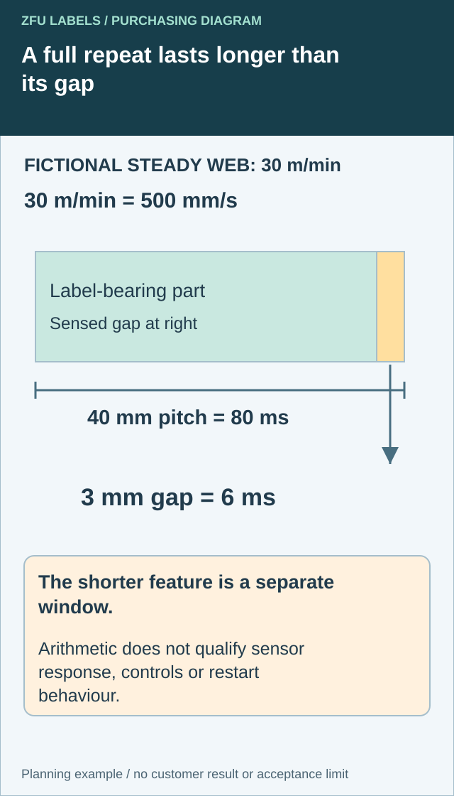

At the same web speed, a full label repeat and its small gap create different time windows. Calculate both for discussion before asking the equipment owner to accept a shorter gap; neither calculation alone validates detection.
Link the actual sensing path to each relevant artwork and construction in the family. This guide adds a SKU-to-sensor evidence matrix. It does not diagnose an applicator from a photograph or prescribe a sensor setting.

Calculate the two intervals before discussing a smaller gap
Use the actual web movement at the sensing location, not finished bottles per minute unless the equipment owner has established the relationship. Obtain pitch and the relevant gap along the sensor's path. An unusual contour may create a different sensed feature from the gap dimension shown elsewhere on the drawing.


For steady motion, time equals distance divided by speed. A web moving at 30 m/min moves 500 mm each second. At that illustrative speed, a 40 mm pitch takes 0.08 seconds, or 80 ms, while a 3 mm gap takes only 0.006 seconds, or 6 ms. Those are arithmetic examples, not recommended dimensions or machine settings.
| Timing input | Unit-checked record | Decision boundary |
|---|---|---|
| Web speed at sensor | Actual value and units; 30 m/min equals 500 mm/s in the example | Do not substitute container rate without a supported conversion |
| Repeat pitch | Equivalent-position distance along movement | Defines the nominal repeat interval |
| Sensed gap/feature | Actual path through the physical construction | Defines a potentially much shorter feature duration |
| Motion state | Steady, accelerating or another identified condition | Steady arithmetic does not represent every restart |
| Equipment evidence | Exact model, relevant specification and trial scope | Responsible owner establishes acceptable operation |
Reducing the example gap while retaining its speed shortens the gap window. Changing speed changes both times. Keep proposed geometry and speed together when asking the equipment team for a review rather than reporting only labels per minute.
Do not compare a catalogue response-time number with 6 ms and declare the line qualified. Detection principle, actual signal, control path and the manufacturer's application conditions remain relevant. Leuze's label-detection overview lists model-specific response characteristics and different sensing technologies; those catalogue entries are not approval of this example.
The practical alternatives may include keeping the confirmed gap, asking for a supported geometry change or reviewing a different detection arrangement. Only the responsible equipment specialists can approve that arrangement and any settings. The buyer can make the question precise without prescribing teach-in or altering machinery.
Retain the calculation beside the actual roll drawing and SKU-to-sensor matrix below. It is a communication and unit-checking asset, not an explanation for every missed label or a replacement for production-representative evidence.
AI-generated illustration retained on this article only. Fictional packaging, equipment and readouts; no depicted date, setting or result is a production recommendation.
Mark the path on the roll drawing
Ask the equipment owner to identify where the sensor reads relative to the web edge and label repeat. Use that location to review the artwork, gap and any registration mark. Keep the drawing revision with the actual sensor model and its approved method.
| Matrix field | What to record for each relevant variant |
|---|---|
| SKU and artwork | Exact file and revision, including white or metallic layers |
| Construction | Face, adhesive, liner and final converted format |
| Detection path | Which physical area passes the sensing point |
| Intended signal | Gap, mark or other feature under the equipment's method |
| Trial identity | Sample roll, machine/station and operating conditions |
| Result and exception | Observed behavior, unresolved issue and approval owner |
Do not populate one SKU's result across every row. Where the equipment owner accepts representative grouping, record the reasoning and its limits. A different white layer, cut shape or liner can make a previous row less representative even when the product belongs to the same brand.
Keep machine data separate from decorative artwork
If an eye mark is used, identify its position, repeat and required appearance under the actual equipment specification. A designer should not move or remove it to clean up a preview. The supplier and line owner need to agree the actual production arrangement; an arbitrary dark rectangle is not a validated correction.
Leuze's official labeling overview distinguishes optical solutions for non-transparent labels and ultrasonic or combined solutions for transparent constructions. These manufacturer examples establish that detection principle matters; they do not select or approve a model for your line.
Treat changes as evidence questions
When a variant changes, compare the sensing-path row before reusing approval. If the change is irrelevant to the detection arrangement, have the responsible line reviewer record that conclusion. If it affects the signal or geometry, identify the additional evidence needed. This avoids both blind release and unnecessary repetition of every previous test.
Use the unwind station record for roll orientation, core/diameter sheet for physical fit and clear-versus-white opacity map for the separate visual decision. Good appearance does not establish machine detection.
Short answer
Confirm what the applicator detects: the physical gap, an eye mark, label opacity or a material change. Then specify the sensor type, minimum gap, mark position, web path and line speed on the roll drawing. Do not assume a standard optical fork sensor will see a clear label on a clear liner.
The buyer sees a transparent label. The machine sees a signal difference measured in milliseconds. Those are not the same job.
Four common detection strategies
| Method | Works by detecting | Main caution |
|---|---|---|
| Optical gap sensor | Light difference between label and liner | Clear-on-clear contrast may be too weak |
| Ultrasonic fork sensor | Material thickness or acoustic change | Must be mounted and taught correctly |
| Contrast / eye-mark sensor | Printed dark mark against the liner | Mark position and repeat must stay controlled |
| Capacitive sensor | Change in dielectric properties | Material and environmental setup matter |
A composite sparkling-water line
This is a composite planning example. A brand moves from white film to clear labels. The first samples apply by hand and look excellent. On the automatic line, the applicator feeds two labels, stops, then advances half a repeat. Everyone blames roll direction.
In this hypothetical example, the artwork crossing the sensing path deserves investigation. A compatible detection arrangement and the final converted roll must be reviewed by the responsible equipment specialist.
Gap size is a machine parameter
The actual sensor and applicator specification control the permitted geometry. A gap stated for another device is not a general production rule. High speed, unusual die shapes, liner noise and old controls can require more space.
A narrow gap also reduces label material waste, which purchasing likes. But saving one millimeter is false economy if it creates intermittent double feeds. Run the actual label shape and construction at production speed before reducing the approved pitch.
When an eye mark is useful
A dark registration mark can give a contrast sensor a consistent trigger when label opacity varies. The mark must repeat at the correct pitch, stay on the sensor side of the web and avoid trimming or splice areas. Its ink should not transfer, smear or interfere with later recycling claims.
Eye marks also need artwork control. If a designer moves the mark to make the PDF look cleaner, the machine may stop seeing the roll. Treat the mark as production data outside the visual design, with a locked layer and dimension.
Sensor-ready roll checklist
- Record sensor manufacturer, model and detection principle.
- Show which side of the web passes through the sensor.
- Specify minimum gap, repeat length and web width.
- Dimension any eye mark from the web edge and label repeat.
- Confirm clear, metallic and heavily printed variants separately.
- Include splice behavior in the line trial.
- Run at production speed and record teach-in settings.
Also confirm label roll direction and leading edge before release.
Send the relevant project details
Resolve the specific label handoff
Include sensor/station reference, actual pitch and sensing-path gap, proposed web-speed range and equipment-owner review.
Prepare the label specification inquiry. The contact page opens an email draft for review; send files through the listed email or WhatsApp route. Actual supply scope, samples, pricing and timing require project confirmation.
Related decisions: Butt-Cut or Gapped Labels: Match the Format to Dispensing and Detection; Missing Labels on a Roll: Define Which Finished Packs Need Review; Label Unwind Direction: Tie the Drawing to the Actual Labeling Station